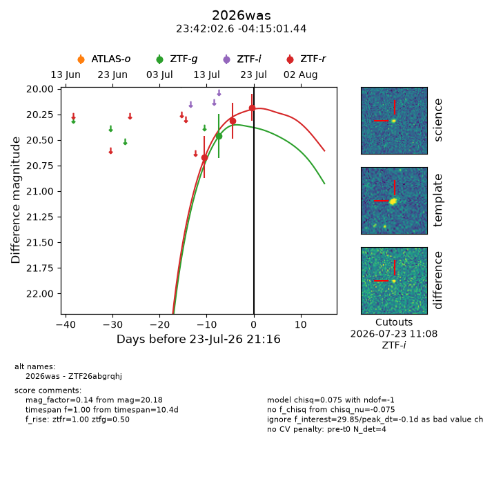
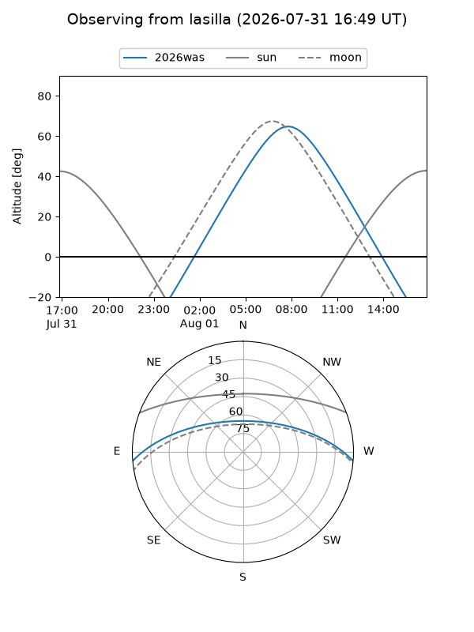
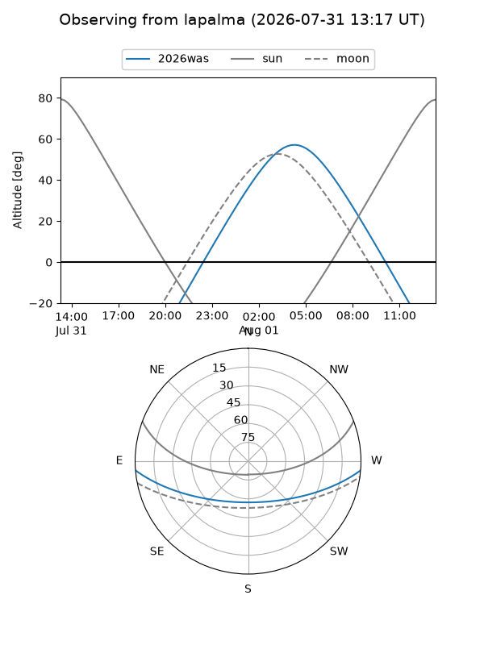
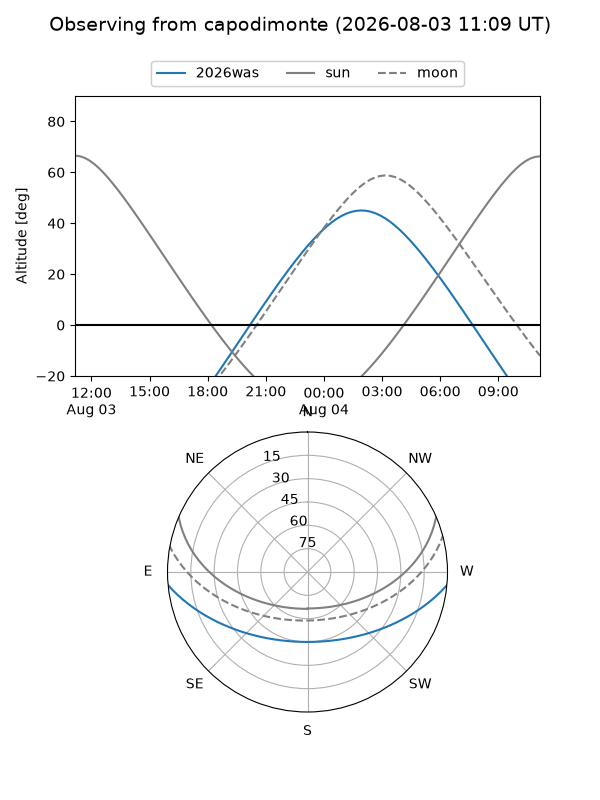
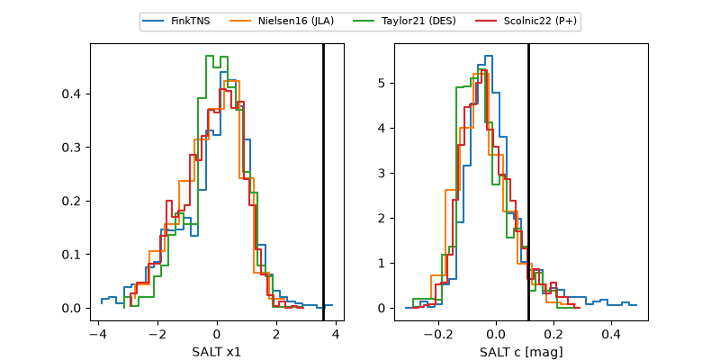

2026was
Target 2026was at 2026-07-23 21:19
Aliases and brokers:
FINK-ZTF: ztf.fink-portal.org/ZTF26abgrqhj
Lasair-ZTF: lasair-ztf.lsst.ac.uk/objects/ZTF26abgrqhj
ALeRCE-ZTF: alerce.online/object/ZTF26abgrqhj
YSE-PZ: ziggy.ucolick.org/yse/transient_detail/2026was
TNS name: wis-tns.org/object/2026was
Direct TNS query: direct search
alt names
ZTF26abgrqhj (ztf,fink_ztf)
2026was (tns,yse)
Coordinates:
equatorial (ra, dec) = 355.5106,-4.25040
equatorial (HMS+DMS) = 23:42:02.55,-04:15:01.44
galactic (l, b) = (83.9976,-61.75825)
Flags:
TNS type: nan
peak dt: -0.1
Photometry:
last ztfg=20.46, ztfr=20.18
1 ztfg, 3 ztfr detections
Lightcurve

Visibility



Additional plots
